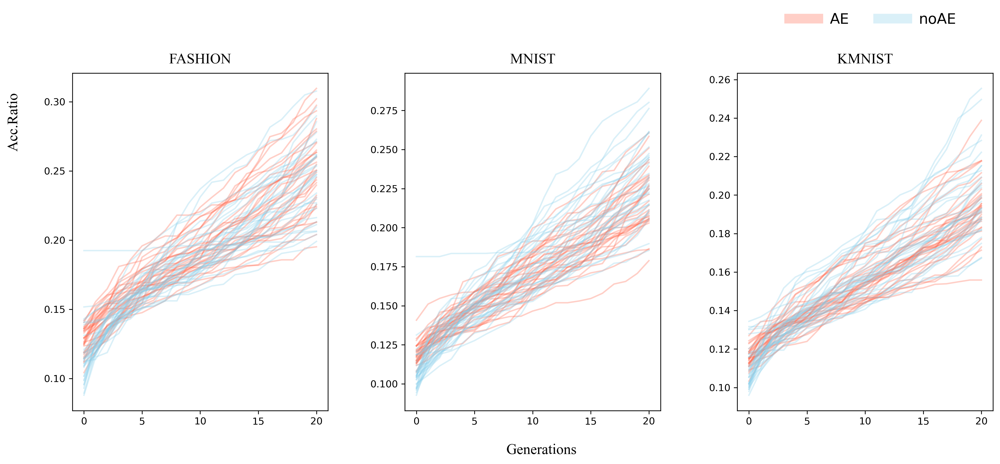
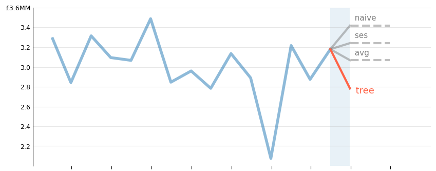

Selected Projects
* Automated Architecture Search for Lightweight AI
Deploying modern AI requires balance. While larger models are typically more accurate, they introduce costs in terms of hardware, energy and money.
To solve this, I built a custom multi-objective neuroevolutionary framework from scratch in PyTorch. The system automates Neural Architecture Search to discover optimal trade-offs between model accuracy and computational cost.
This project demonstrates how selective evolutionary pressure can be used to optimise CNN populations that are tailored for resource-constrained environments.

- PyTorch
- Matplotlib
- Google Colab
* Business Revenue Forecasting with Time-Series Analysis
A case study in revenue forecasting, business analysis and data cleaning using proprietary data from an anonymised UK-based biotech company.
- Pandas
- Matplotlib
- Scikit-Learn
- Statsmodels

* Online User Experience Analyser
I built an end-to-end web application that translates unstructured user feedback into structured quantitative metrics in real time.
The pipeline exposes a custom REST API using FastAPI, serving a Hugging Face NLP model. This model interprets textual sentiment as a proxy for user experience on the fly, yielding a score that is pushed into a lightweight database backend ready for use.
The entire application is containerised via Docker to minimise conflicts and ensure predictable deployment independently of the environment.
- Hugging Face
- FastAPI
- Docker
- SQLite